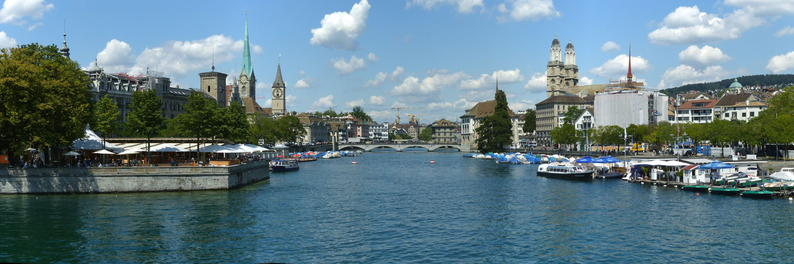
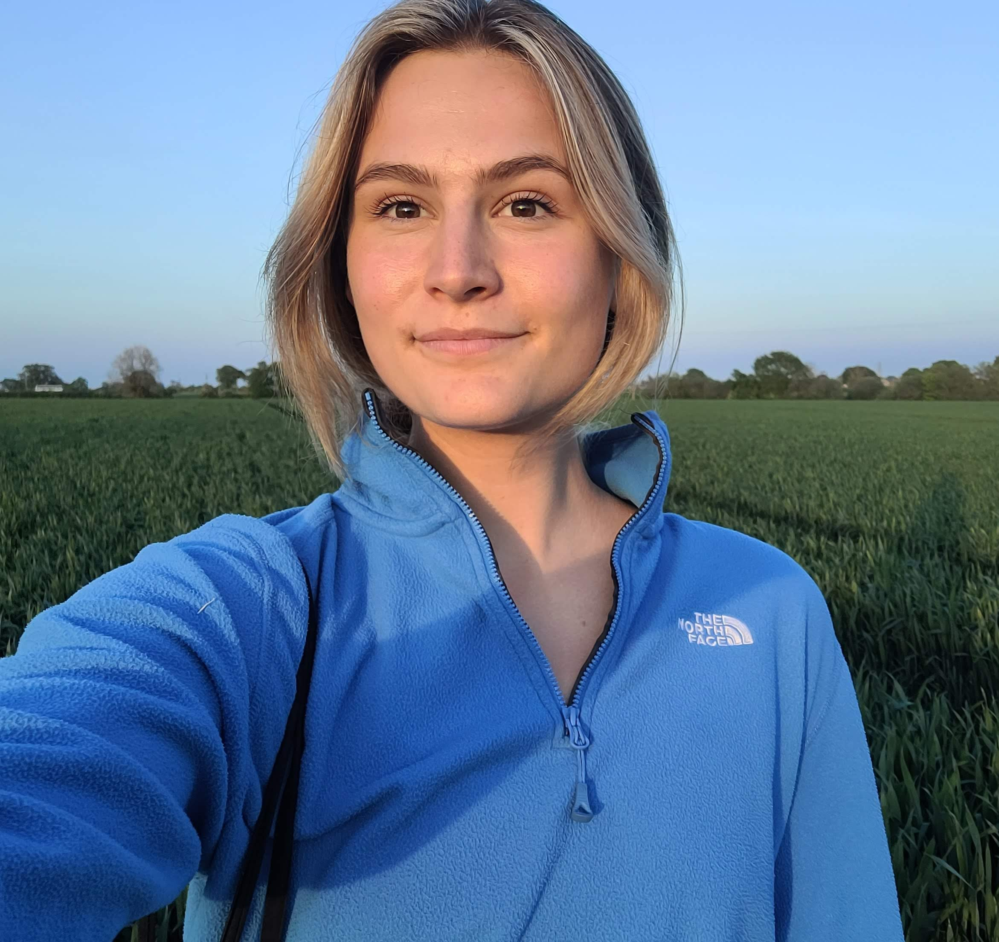
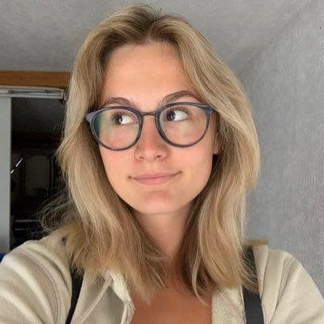

> whoami
PhD Candidate · Political Communication · University of Zurich


Eva-Maria Vogel is a doctoral researcher whose work explores the societal impact of political social media influencers on youth political engagement across platforms. As part of a comparative project spanning the US, Germany, and Poland, she uses computational methods to examine how digital influencers shape political communication and mobilization. With a background in political psychology and science communication, her research sits at the intersection of technology, credibility, and public discourse.
publications
conference presentations
media